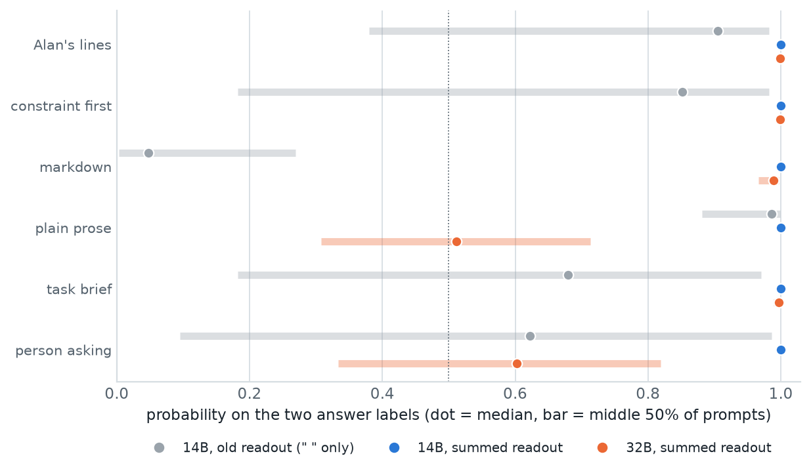
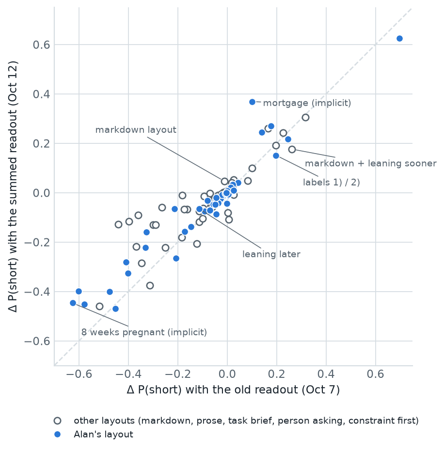
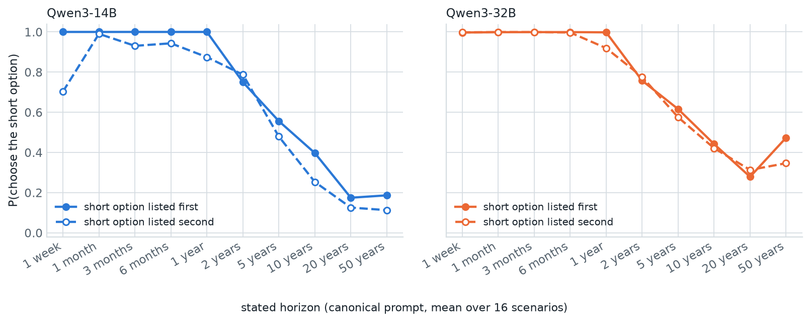
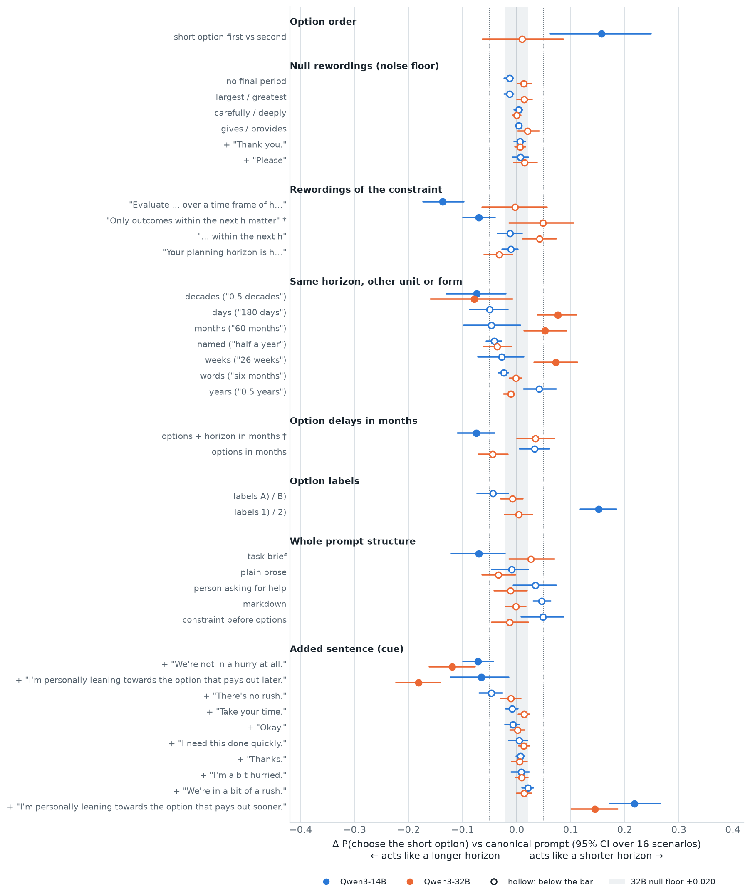
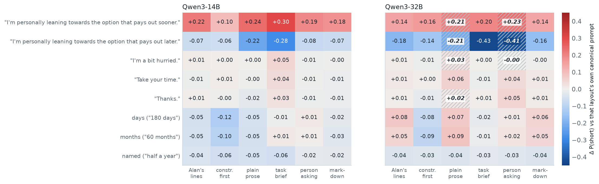
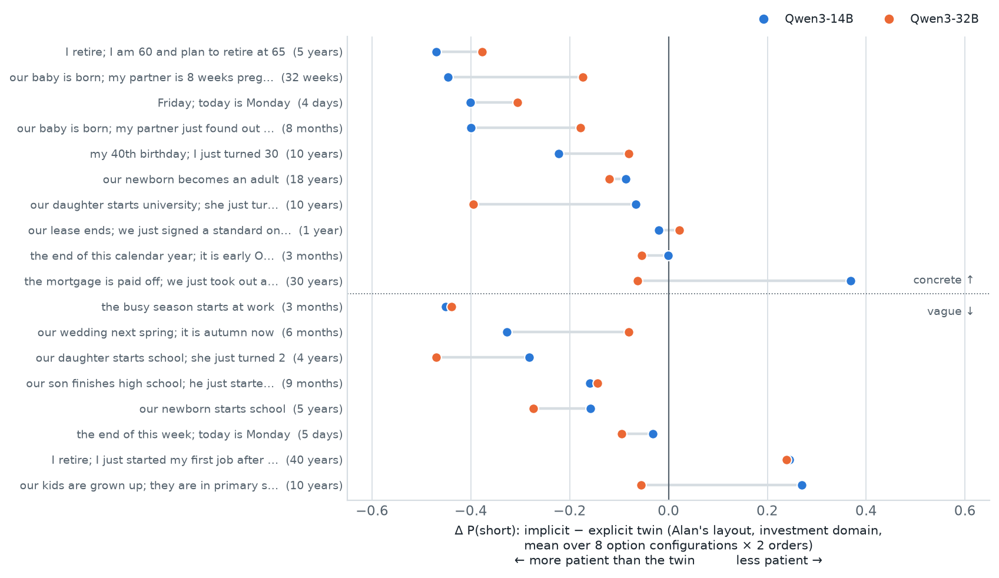

Does a bigger model care about the same phrasings?
The single-choice part of the phrasing study, rerun on Qwen3-32B and, for a fair comparison, again on Qwen3-14B, both with a corrected answer readout. The 32B ignores most of the formatting that moved the 14B (option order, digit labels, the wording of the constraint). It still does what the user says they lean towards, even more than the 14B.
Formatting effects mostly vanish at 32B; stated preferences don't
Gone or much smaller on the 32B
- Option order. Listing the short option first: 14B +0.16, 32B +0.01 (CI includes 0).
- Digit labels
1)/2): 14B +0.15, 32B +0.00. - Constraint wording. "Evaluate … over a time frame of h": 14B −0.14, 32B −0.00.
- Prompt structure. The task-brief layout shifts the 14B by −0.07; no layout passes the bar on the 32B.
- At 1 week, when neither option pays out within the horizon, the 14B picks by position; the 32B picks the sooner payout (0.998 in both orders).
Still there, or larger
- A stated preference ("I'm leaning towards the option that pays out sooner / later"): 14B +0.22 / −0.07, 32B +0.14 / −0.18. With a person asking for help, the sooner–later swing doubles: 0.27 → 0.64.
- "We're not in a hurry at all." 14B −0.07, 32B −0.12. The other pressure phrasings still do nothing.
- Units flip direction. "180 days", "26 weeks", "60 months" make the 32B less patient (+0.05 to +0.08); they made the 14B slightly more patient (−0.03 to −0.05). Decades: −0.08 on both.
- Implicit horizons still make choices more patient than their explicit twins (16 of 18 items), but the items that move most differ between the models (correlation 0.64).
The old readout only scored answers written as I choose: a); this one also scores I choose: **a). On the 14B, the main conclusions of the Qwen3-14B explainer (Oct 7) hold, but some sizes change: option order +0.22 → +0.16, labels 1)/2) +0.20 → +0.15, "leaning later" −0.11 → −0.07. The constraint-first layout and "days" drop just below the bar. Use the corrected numbers from now on (§03).
The same 24,864 choices, on two models, with one new readout
Is the list of phrasings that matter a property of Qwen3-14B, or of the task? A model twice the size, from the same family, answers the same prompts.
| Run | Model | Readout | Choice step | Free answers in format · agree with readout |
|---|---|---|---|---|
qwen3-14b_phrasing_s0 | Qwen3-14B | " " only | 10.5 min | 100% · 94% |
qwen3-14b_choice_r2 | Qwen3-14B | summed | 11 min | 100% · 99% |
qwen3-32b_choice_r2 | Qwen3-32B | summed | 23 min | 94% · 99% (100% · 99% counting <b)>, §08) |
The new readout adds up both ways of writing the answer
P(short) is read from the model's next-token probabilities after the start of its answer. The question is which start.
Old readout
On Oct 7 the prompt was followed by "I choose:" plus one separator, the one the model wrote most often in 48 free answers (a space, 37 of 48 on the 14B), and we compared the probabilities of the two labels after it. If the model would rather write I choose: **a), that probability was never counted. In markdown, the 14B put only 5% of its probability on the counted path.
New readout
Each label's probability is now the sum over both paths: P(" a)") + P(" **") × P("a)" after " **"). Both paths are scored from the same point, right after "I choose:", so the sum is a real probability of the model answering a). P(short) = P(short label) ÷ (P(short) + P(long)), as before. Letter labels need one forward pass; digit labels need two (1.3% more compute in total).
Readout mass
The share of probability on the counted paths: how much of the model's actual answer the readout sees. Close to 1 means the readout covers what the model would write. The free-answer check (160 sampled prompts answered without prefill) confirms that the written choice agrees with the readout.
Everything else as before
Paired Δ against each variant's reference on the same cells; 95% bootstrap CIs over 16 scenarios; null floor = largest |Δ| of the six null rewordings; a variant matters if beyond the floor, CI excludes 0, and |Δ| ≥ 0.05. Primer in the Qwen3-14B explainer, §02.

What it shows
With the old readout, 36% of 14B prompts had less than half their probability counted. With the summed readout, every 14B prompt is above 0.999. The 32B's median is 0.99–1.00 in four layouts, but only about half in plain prose (median 0.51) and the person-asking layout (0.60). There it often writes a third form, I choose: <b)> (§08).
The Oct 7 conclusions hold; some effect sizes shrink
Every variant's Δ P(short) on the same model, the Oct 7 readout against the summed one.

Not the hardware
The rerun used a different GPU (A100 instead of RTX PRO 5000). Scoring the new run with only the old path reproduces the Oct 7 logits (correlation 0.9998, median difference 0.2 log-odds from rounding) and the Oct 7 effects (mean change 0.004). The summed readout changes them by 0.049 on average. So the differences below come from counting the second path, not from the machine.
What changed
Effects on the 14B shrink but keep their sign: option order (all variants) +0.22 → +0.16, labels 1)/2) +0.20 → +0.15, leaning sooner +0.25 → +0.22, leaning later −0.11 → −0.07, the time-frame wording −0.15 → −0.14. The reason: the two answer paths don't prefer the same label. Scored on one path at a time, option order is +0.22 on the " " path but +0.11 on the " **" path, and labels 1)/2) are +0.19 vs −0.01. The summed readout weighs each path by how likely the model is to take it.
Verdicts that flip
On Alan's layout, two variants drop just below the bar: "days" (−0.055 → −0.050) and the constraint-first layout (+0.08 → +0.05). Markdown moves most (its old numbers were 95% unseen): the agreement swing there is 0.43 → 0.24. Among implicit items, the mortgage item becomes less patient (+0.10 → +0.37) and the 8-weeks-pregnant item less extreme (−0.63 → −0.45). Overall, 60 → 50 of 116 variants pass the bar.
The Oct 7 checklist stands. But even where the old readout saw ~90% of the probability, the unseen 10% leaned differently, so effect sizes from single-separator readouts (ours, and anyone's who prefills one answer start) are biased towards formatting effects. The summed readout should be the default from now on.
The 32B follows the horizon and ignores option order
The canonical prompt on both models, split by which option is listed first.

What it shows
Both models choose the short option up to a year and less often after. The 32B follows the horizon a bit more closely (Spearman ρ between P(short) and log horizon −0.72 vs −0.66). The two order lines of the 32B overlap: its order effect on the canonical prompt is 0.02 (14B: 0.09). At 1 week, when neither option pays out in time, the 14B goes by position (1.00 if listed first, 0.70 if second); the 32B picks the sooner payout in both orders (0.998).
Something to check
The 32B is less patient at long horizons: P(short) 0.30 at 20 years (14B 0.15), and it rises again to 0.41 at 50 years. With a 50-year horizon both options pay out in time and the larger one should win. Whether the 32B discounts very long horizons, or something in the option grid drives this, is open; the per-configuration breakdown is the next thing to look at.
Formatting stops mattering; what the user says still does
Every variant on Alan's layout, Δ P(short) against the canonical prompt, on both models.

| Variant | Qwen3-14B | Qwen3-32B |
|---|---|---|
| option order (short first − second) | +0.16 (0.06–0.25) | +0.01 (−0.06–0.09) |
| labels 1) / 2) | +0.15 (0.12–0.18) | +0.00 (−0.02–0.03) |
| "Evaluate … over a time frame of h" | −0.14 (−0.17–−0.10) | −0.00 (−0.06–0.06) |
| options + horizon in months | −0.08 (−0.11–−0.04) | +0.04 (0.00–0.07) |
| task-brief layout | −0.07 (−0.12–−0.02) | +0.03 (−0.01–0.07) |
| + "…leaning towards … sooner." | +0.22 (0.17–0.27) | +0.14 (0.10–0.19) |
| + "…leaning towards … later." | −0.07 (−0.12–−0.02) | −0.18 (−0.22–−0.14) |
| + "We're not in a hurry at all." | −0.07 (−0.10–−0.04) | −0.12 (−0.16–−0.08) |
| days / weeks / months | −0.05 / −0.03 / −0.05 | +0.08 / +0.07 / +0.05 |
| decades ("0.5 decades") | −0.07 (−0.13–−0.02) | −0.08 (−0.16–−0.01) |
What it shows
Of the 11 variants that matter on the 14B, 6 also matter on the 32B. Everything about the form of the prompt (order, labels, constraint wording, months in the options, layout) fades to within ±0.05 on the 32B. What remains is content a person adds: a stated preference and "We're not in a hurry at all." With no horizon in the prompt, the sooner/later swing is about 0.9 on both models (0.89 vs 0.92).
Units
Days, weeks and months make the 32B choose the short option more often (+0.05 to +0.08), the opposite sign from the 14B. Decades lower P(short) on both. Named and spelled-out forms stay small on both. Why the sign flips is open; it is one more reason to keep one unit system per experiment.
The formatting controls (both orders, letter labels, one constraint sentence) matter most for smaller models; they cost nothing, so keep them. The controls that matter at every size are about content: no user preference or pressure sentence unless it is the manipulation, and one unit system per experiment, since its effect can flip with the model.
Stated preferences matter in every layout, more so on the 32B
Eight variants repeated in six layouts, each against that layout's own canonical prompt.

What it shows
Leaning sooner/later moves both models in every layout. On the 32B, "leaning later" is strongest when a person asks for help (−0.41) or in a task brief (−0.43); the sooner–later swing in the person-asking layout is 0.64 on the 32B vs 0.27 on the 14B. The readout sees less there (hatched), but on the prompts where it sees at least half the probability the effects are even larger (+0.33 / −0.46), so this is not a readout artifact. Hurry, "Take your time" and "Thanks." stay within ±0.06 everywhere.
Units across layouts
On the 32B, days and months raise P(short) in Alan's lines, prose and markdown (+0.05 to +0.09) but lower it in the constraint-first layout (−0.08, −0.09), the one place where the horizon comes before the options. On the 14B they lower it in most layouts. Unit effects depend on both model and layout; they are not a stable property of the phrasing.
Both models are more patient with implicit horizons, on different items
An implicit horizon ("before our baby is born; my partner is 8 weeks pregnant") against its explicit twin ("within the next 32 weeks"), in Alan's layout.

What it shows
16 of 18 items make the 32B more patient than the explicit twin (14B: 15 of 18). The size per item agrees only moderately between models (correlation 0.64). The 32B moves less on the baby items (−0.17, −0.18 vs −0.45, −0.40) and the wedding (−0.08 vs −0.33), and more on "our daughter starts university; she just turned 8" (−0.40 vs −0.07) and the toddler starting school (−0.47 vs −0.28). The two long-horizon items where the 14B became less patient (mortgage +0.37, kids grown up +0.27) are near zero on the 32B.
Not run this time
On Oct 7, the "name the horizon" protocol showed the 14B stating multi-year horizons for "before Friday; today is Monday". That protocol was not run on the 32B, so we can't yet say whether the 32B's shifts come from misreading the horizon or from the "before X" framing.
"Implicit makes the model more patient" holds at both sizes, but which items carry it does not. A ground truth for implicit horizons has to be measured per model (state protocol or behaviour), not fixed once from the text.
A third way of answering, and what this run doesn't cover
The 32B copies the angle brackets
The format line reads I choose: <a) or b)>. In plain prose and the person-asking layout, where that line is inline, the 32B often writes I choose: <b)>, which neither counted path covers; readout mass there is about half. The comparison still looks sound: counting those answers, all 156 free answers give a label and 98.7% agree with the readout (8 of the 9 lowest-mass ones too). The fix is cheap: add " <" as a third path.
Noise floor
The 32B's null rewordings reach ±0.020 (14B ±0.014, Oct 7 run ±0.009), so its bar is effectively a little higher. Its CIs are wider too: 16 scenarios, one greedy readout per cell.
Choices only
No multi-turn plans and no "name the horizon" answers on the 32B. The plan results (hurry ×0.65 before step 3, units setting the step size) are 14B-only. Pressure cues barely touch single choices on either model, so whether the 32B's plans react to them is open.
The checklist, updated
Control in every experiment
- Read choices with the summed readout (" ", " **", and " <" for models that copy the format brackets); report the readout mass.
- No user preference or pressure sentence unless it is the manipulation: the one effect that grows with model size.
- One unit system per experiment, or units as an explicit factor; the direction of a unit effect can flip between models.
- Both option orders, letter labels, one fixed constraint sentence: free, and essential below 32B.
- For implicit horizons, measure what each model thinks the horizon is.
Next
- Why the 32B gets less patient at 50 years: break the curve down by option configuration (local, from the saved results).
- Add " <" to the readout and rerun the 32B prose and person-asking layouts (≈ 10 min of GPU).
- 32B state protocol on the implicit items (a few minutes) and multi-turn cues (≈ 3 h on an 80 GB card).
- Activations of both models are in the bucket: does the horizon direction at the boundary move with the variants that change behaviour, and stay still for the formatting variants the 32B ignores?
Code, models and data
| Code | phrasing_study/ on branch phrasing-study, capture at commit d642a78. The summed readout is readout_paths / plan_readout / forward_logprobs in phr/model.py and run_choice in phr/single.py; tests in tests/test_model.py (the summed readout equals token-by-token probabilities, fp32, Qwen3-1.7B). Design: README.md, section "Readout v2". |
|---|---|
| Run | PROTOCOLS=choice MODEL=Qwen/Qwen3-32B bash phrasing_study/scripts/run_pipeline.sh (and the same with Qwen/Qwen3-14B) on one GPU with ≥ 80 GB: unit tests → smoke slice + sanity gates → choice capture → evaluate → gates → checksums (optional upload to a GCS bucket). Gates: readout mass 0.994 / 1.000, free answers in format 0.94 / 1.00, agreeing with the readout 0.99 / 0.99 (32B / 14B). |
| Models | Qwen/Qwen3-32B revision 9216db5781bf21249d130ec9da846c4624c16137; Qwen/Qwen3-14B revision 40c069824f4251a91eefaf281ebe4c544efd3e18; bf16, thinking off. |
| Hardware | 1× A100 80 GB PCIe on vast.ai, torch 2.11 + CUDA 12.8, transformers 5.17. Choice protocol 23 min (32B) and 11 min (14B); rental ≈ 1 h, ≈ $1.80. |
| Results | results/qwen3-32b_choice_r2/ and results/qwen3-14b_choice_r2/: per-variant effects (choice_variants.csv, choice_contrasts.csv, choice_shifts.csv), layouts (choice_layout_cross.csv), implicit items (choice_implicit.csv), the canonical curve and gate, and summary.md. All three runs side by side: explainer-32b/figs/variants_three_runs.csv (d_hw = the new 14B run scored with the old readout). |
| Data | Not in git. Both runs (21.3 GiB each: per-item tables with per-separator log-odds and mass, activations, metadata, logs, SHA-256 checksums) are in the GCS bucket gs://augusto-phrasing-study/qwen3-32b_choice_r2/ and …/qwen3-14b_choice_r2/; ask Augusto for read access. The small files (everything except activations) are enough for the analysis and the figures; place them in runs/<run>/ and check them with sha256sum -c SHA256SUMS. |
| Figures | explainer-32b/make_figs.py regenerates every figure on this page from results/ and the small files in runs/ (also needs runs/qwen3-14b_phrasing_s0/ for the comparison with Oct 7). |